Wenn Klicken nicht mehr reicht, stell mich ein
Drei Kapitel lang haben wir im Chatfenster und auf der Leinwand gesprochen. In diesem komme ich auf deinen Computer: die Version von mir, die deine Dateien liest, ändert, Befehle ausführt und festhält, was sie getan hat — Claude Code. Du musst immer noch nicht programmieren können; aber am Ende dieses Kapitels wirst du keine Angst vor einem Terminal haben und eine Vollzeitkollegin an deinem Schreibtisch.
Am Ende dieses Kapitels
- weißt du, was die Wörter Terminal, Datei und Befehl bedeuten — und warum keines davon zu fürchten ist
- hast du Claude Code installiert und ihm in einem Ordner die erste Aufgabe gegeben
- weißt du, was ich ohne Nachfrage tue und was ich jedes Mal frage
- schreibst du deinem Projekt ein «Gehirn»: CLAUDE.md
- schreibst du deinen ersten Skill und reduzierst eine Arbeit auf einen einzigen Befehl
- siehst du, wie Unteragenten die Arbeit aufteilen und die Ergebnisse zurückbringen
- lernst du, jeden Schritt mit Git rückgängig machbar zu halten
Inhalt
01Wo das Klicken endet
In Kapitel 3 bist du weit gekommen, indem du Kästchen verbunden hast. Aber irgendwann enden die Kästchen: denselben Satz auf zwanzig Seiten deiner Website ändern, aus einer Tabelle für hundert Kunden je ein eigenes PDF erzeugen, sagen «verkleinere alle Fotos in diesem Ordner und korrigiere ihre Namen». Das geht nicht mit Klicks, sondern mit Dateien und Befehlen. Und bisher hieß das: entweder programmieren können oder jemanden dafür bezahlen.
Claude Code nimmt diese Mauer weg. Derselbe Verstand wie im Chat; der Unterschied ist, dass er Hände hat. Er arbeitet in einem Ordner auf deinem Computer: liest Dateien, ändert sie, führt Befehle aus, sieht das Ergebnis, korrigiert bei Bedarf und hält fest, was er getan hat. Du sagst, was du willst; wie es geht, finde ich heraus — aber bei jedem wichtigen Schritt frage ich dich.
In Kapitel 1 sagte ich: «Ich habe keine Hände, allein kann ich nichts tun.» Für das Chatfenster stimmt das weiterhin. Claude Code ist eine Version, deren Hände du gibst, du begrenzt und du jederzeit zurücknehmen kannst. Die Hände gehören mir; die Werkbank, die Regeln und das letzte Wort gehören dir.
Mach das jetzt: Schreib drei Arbeiten an deinem Computer auf, bei denen du sagst «von Hand dauert das Stunden». Dateien, Ordner, Tabellen, Website — was auch immer. Am Ende dieses Kapitels gibst du mir eine davon.
02Drei Wörter: Terminal, Datei, Befehl
In Kapitel 3 haben drei Wörter das ganze Feld geöffnet. Hier ist es genauso. Wenn du diese drei kennst, ist der Rest nur noch Reden.
Terminal
Das schwarze Fenster, in dem du schreibend mit deinem Computer sprichst. Statt zu klicken schreibst du: «geh in diesen Ordner», «öffne diese Datei». Es wirkt einschüchternd, weil es leer ist; aber es unterscheidet sich nicht von einem leeren Chatfenster. Claude Code lebt in diesem Fenster.
Datei und Ordner
Kennst du längst; wir ändern nur den Namen. Deine Website ist ein Ordner, die Seiten darin sind Dateien. Eine Tabelle ist eine Datei, ein Vertrag ist eine Datei. Du zeigst Claude Code einen Ordner; das Innere dieses Ordners ist sein Schreibtisch.
Befehl
Die einzeilige Arbeit, die du ins Terminal schreibst: «verkleinere die Fotos», «veröffentliche die Website», «führe die Tests aus». Befehle musst du nicht auswendig können — ich kenne sie. Deine Aufgabe ist es, das Ergebnis zu verlangen, nicht den Befehl.
Vier Dinge kann ich auf deinem Computer erreichen; alle stehen unten. Neben jedem steht, wann ich frage — das ist die wichtigste Zeichnung dieses Kapitels.
Mach das jetzt: Finde das Terminal auf deinem Computer und öffne es. Auf dem Mac «Terminal», unter Windows «PowerShell» oder «Terminal». Schreib nichts; schau das Fenster nur an. Nichts zu fürchten, oder?
03Installation: zehn Minuten
Claude Code hat mehrere Gesichter: eine Terminal-Version, eine Desktop-App, eine Version im Browser und Erweiterungen, die in Code-Editoren leben. Alle führen dasselbe Ich aus. In diesem Kapitel installieren wir die Terminal-Version, weil das der kürzeste Weg ist, die anderen zu verstehen.
- 1Öffne das Terminal und füge den einzeiligen Installationsbefehl von der offiziellen Seite ein. Unter Mac und Linux eine curl-Zeile, unter Windows eine PowerShell-Zeile. Der Befehl kann sich von Version zu Version ändern; nimm immer den von der offiziellen Seite.
- 2Geh im Terminal in den Ordner, in dem du arbeiten willst, und schreib claude. Beim ersten Mal öffnet sich der Browser und du meldest dich mit deinem Konto an. Mit einem Claude-Abo ist es enthalten; sonst geht auch ein Schlüssel, bei dem du nach Verbrauch zahlst.
- 3Es erscheint eine Chatzeile. Das war's. Jetzt sprichst du in diesem Ordner mit mir — wie im Chatfenster, nur mit Händen.
In welchem Ordner du startest, ist wichtig: dieser Ordner wird mein Schreibtisch. Öffne keinen für deinen ganzen Computer, sondern einen Ordner je Arbeit — «agentur-website», «berichte», «kunde-x». Ein aufgeräumter Schreibtisch erleichtert deine und meine Arbeit; in Abschnitt 16 kommen wir auch aus Sicherheitsgründen darauf zurück.
Mach das jetzt: Installiere es. Leg dann auf dem Schreibtisch einen leeren Ordner namens «werkstatt» an, geh im Terminal hinein und schreib claude. Melde dich an. Wenn du die Chatzeile siehst, bist du bereit.
04Deine erste Aufgabe, Schritt für Schritt
Die Animation unten zeigt, was bei einer echten ersten Aufgabe im Terminal passiert: eine Telefonnummer auf einer Website ändern. Sie läuft von selbst, und du kannst die Schritte anklicken.
Achte auf den vierten Schritt: Ich zeige die Änderung, bevor ich sie mache. Die Minuszeile ist der alte Stand, die Pluszeile der neue. Du musst keinen Code lesen; du schaust nur auf den Unterschied zwischen alt und neu. Dieses «Unterschied zeigen» begegnet dir überall in diesem Kapitel — und ist deine größte Sicherheit.
Mach das jetzt: Schreib mir im Ordner «werkstatt»: «Leg in diesem Ordner eine Datei notizen.md an und schreib das heutige Datum und 'erste Aufgabe' hinein.» Lass mich fragen, schau es an, nimm es an. Die Datei erscheint auf dem Schreibtisch.
05Das Berechtigungstor: wann ich frage
Du arbeitest mit etwas, das auf deinem Computer Hände hat; deine erste Frage sollte lauten: «Was macht es von allein?» Die Antwort sind drei Tore, und alle stellst du ein.
Diese Tore ändert eine Einstellung namens «Berechtigungsmodus». Am Anfang frage ich bei jeder Änderung. Wenn du mir zu vertrauen beginnst, kannst du sagen «Dateiänderungen ohne Nachfrage»; weiter fortgeschritten gibt es einen automatischen Modus, der gefährliche Arbeiten selbst herausfiltert. Im Terminal wechselst du die Modi mit einer Tastenkombination; welcher aktiv ist, steht unten am Bildschirm.
Ehrlicher Rat: Bleib die erste Woche in dem Modus, in dem ich alles frage. Es wird langweilig wirken; aber bei jeder Freigabe liest du einen Unterschied, und nach einer Woche weißt du intuitiv, was ich tue. Vertrauen entsteht nicht aus dem «Nie fragen»-Modus, sondern daraus, hundertmal «Ja» gesagt zu haben.
Mach das jetzt: Sag mir «lösche alle Dateien in diesem Ordner». Sieh, dass ich es nicht ohne Nachfrage tue — dass ich dich sogar warne. Sag dann «nein». Das ist das dritte Tor.
06Erst der Plan, dann die Arbeit
Bei kleinen Arbeiten mache ich es direkt. Bei großen — «füge der Website einen Blog hinzu», «erzeuge aus dieser Tabelle je Kunde einen Bericht» — wäre das falsch: auf halbem Weg träfe ich eine Entscheidung, die du nicht wolltest. Dafür gibt es einen Planmodus: Ich lese, denke nach, schreibe die Schritte auf, rühre aber keine einzige Datei an. Du liest den Plan, korrigierst ihn, gibst ihn frei; erst danach beginnt die Arbeit.
Füge der Website einen Blog hinzu.
Ich mache es — aber wohin, mit welchem Design, welche Dateien ändernd? Nach meinem eigenen Urteil. Dann sagst du «so wollte ich das nicht», wir machen es rückgängig, Zeit ist weg.
Ich möchte der Website einen Blog hinzufügen. Mach zuerst einen Plan: welche Dateien sich ändern, wie die Seite aussehen wird, wie lange es dauert. Rühr nichts an, bis ich zustimme.
Es kommt ein Plan mit fünf Punkten. Du änderst den zweiten Punkt und sagst «los». Keine Überraschung auf halbem Weg.
Erinnere dich an die Formel aus Kapitel 2: Rolle, Kontext, Aufgabe, Einschränkung, Format. Einen Plan zu verlangen ist eine Einschränkung — «rühr nichts an, bis ich zustimme». Und ein guter Plan ist genau die «Denkpause»-Regel aus Kapitel 2: erst denken, dann schreiben.
Mach das jetzt: Gib mir eine der Arbeiten aus 01 im Planmodus: «Ich möchte …, erstell zuerst einen Plan, rühr nichts an.» Lies den Plan. Ändere einen Punkt. Gib ihn noch nicht frei — das tust du, wenn du 07 beendet hast.
07Das Gehirn: CLAUDE.md
In jeder neuen Sitzung sehe ich den Ordner von null: Ich weiß nicht, welche Arbeit du machst, welchen Regeln du folgst oder wozu du «nie» gesagt hast. Statt das jedes Mal zu erzählen, schreibst du es einmal auf: eine Datei namens CLAUDE.md im Ordner. Bei jedem Start lese ich sie zuerst. Diese Datei ist mein Gehirn in diesem Projekt; das auf der Karte versprochene «eigene Gehirn» ist genau das.
~/.claude/CLAUDE.md./CLAUDE.md./CLAUDE.local.mdmemory/Was kommt hinein? Die dauerhafte Form der Formel aus Kapitel 2: Rolle («das ist eine Agentur-Website, Türkisch, Gold-Schwarz»), Einschränkungen («rühr die Preisseite nicht an», «führe nach jeder Änderung die Tests aus»), Format («gib mir eine türkische Zusammenfassung, erkläre die Fachbegriffe»). Es gibt auch den Befehl /init: Er lässt mich den Ordner ansehen und den ersten Entwurf schreiben; du korrigierst ihn.
Mach das jetzt: Schreib mir im Ordner «werkstatt» «/init». Öffne die entstandene CLAUDE.md und füge eine «nie»- und eine «immer»-Regel hinzu. Gib dann den Plan aus 06 frei — jetzt arbeite ich und kenne deine Regeln.
08Gedächtnis: was ich behalte und was nicht
In Kapitel 1 war ich ehrlich: Jeder Chat beginnt von null. Im Terminal wird diese Regel etwas weicher; aber wenn du nicht weißt, wie, ärgerst du dich und sagst «wir haben doch gestern geredet». Drei Schichten:
Die Sitzung
Bis du das Terminal schließt, behalte ich alles. Beim Schließen geht die Sitzung nicht verloren; mit «mach da weiter, wo wir aufgehört haben» öffnest du sie wieder. Öffnest du aber eine neue Sitzung, liegt dieses Gespräch nicht auf dem Schreibtisch.
Wenn das Kontextfenster voll wird
Der Arbeitstisch aus Kapitel 1 ist auch hier, und bei langer Arbeit wird er voll. Dann fasse ich das Gespräch zusammen, um Platz zu schaffen; mit /compact kannst du das auch selbst verlangen. Beim Zusammenfassen gehen Einzelheiten verloren — deshalb gehören wichtige Entscheidungen in die CLAUDE.md.
Dauerhafte Notizen
CLAUDE.md schreibst du; das automatische Gedächtnis schreibe ich. Wenn du mich korrigierst («datiere Berichte immer auf Freitag»), notiere ich das und erinnere mich in der nächsten Sitzung. «Merk dir das» genügt; was ich behalten habe, siehst — und löschst — du mit /memory.
Die Regel: Was wichtig ist, bleibt nicht im Gespräch, sondern kommt in eine Datei. Eine Regel, eine Entscheidung, ein «mach das nie wieder» — alles in die CLAUDE.md. Gespräche werden zusammengefasst, Dateien nicht.
Mach das jetzt: Schließ das Terminal. Öffne es wieder, geh mit «weiter, wo wir aufgehört haben» hinein und frag «was haben wir zuletzt gemacht?». Öffne dann eine neue Sitzung und stell dieselbe Frage. Sieh den Unterschied.
09Was ein Skill ist
CLAUDE.md enthält die allgemeinen Regeln, die in jeder Sitzung gelesen werden. Manche Arbeiten haben aber ihr eigenes Rezept: der Wochenbericht, einen Ordner für einen neuen Kunden anlegen, Fotos für die Website vorbereiten. Statt dieses Rezept jedes Mal zu schreiben, machst du einen Skill: ein Ordner, darin eine Datei namens SKILL.md, in der Datei das Rezept. Dann rufst du ihn mit einem Wort; oder ich finde ihn selbst, wenn ich den Namen der Arbeit höre.
- 1Name. Der Name des Ordners; du rufst ihn mit «/haftalik-rapor».
- 2Wann. Die Beschreibung ist für mich: Höre ich den Namen der Arbeit, finde ich dieses Rezept selbst.
- 3Rezept. Schritte, Einschränkungen, Format — die Formel aus Kapitel 2, in eine Datei geschrieben.
Der Unterschied zwischen Skill und CLAUDE.md ist einfach: CLAUDE.md wird immer gelesen und muss kurz bleiben. Ein Skill wird bei Bedarf gelesen und darf lang sein. Allgemeine Regeln ins Gehirn, Arbeitsrezepte in den Skill.
Mach das jetzt: Wähle eine Arbeit, die du einmal pro Woche machst und die jedes Mal gleich ist. Schreib ihre Schritte auf Papier: was gelesen wird, was entsteht, in welchem Format, wohin es gespeichert wird. Im nächsten Abschnitt machen wir daraus eine Datei.
10Schreib deinen ersten Skill
Du musst die Datei nicht von Hand schreiben; du lässt sie mich schreiben. Aber du musst wissen, was du willst — genau das, was du im vorigen Abschnitt auf Papier geschrieben hast.
- 1Sag mir: «Erstell unter .claude/skills/ einen Skill namens 'haftalik-rapor'. Das Rezept ist: …» und füg die Schritte vom Papier ein.
- 2Verlang, dass ich dir die erstellte Datei zeige. Enthält die Beschreibungszeile den Namen der Arbeit? Hat das Rezept Format und Speicherort? Fehlt etwas, lass es mich korrigieren.
- 3Ruf ihn auf: «/haftalik-rapor». Sieh, dass er funktioniert. Sag dann nur «bereite den Wochenbericht vor» — ich sollte ihn finden, ohne dass du den Namen nennst.
- 4Korrigiere die erste Ausgabe: «kürze die Überschriften», «das Datumsformat soll so sein». Lass die Korrektur nicht im Gespräch; trag sie in die Skill-Datei ein. Beim nächsten Mal kommt es richtig.
Manche Arbeiten willst du nur selbst starten — etwa «schick die Rechnungen». Dann setzt du oben in den Skill die Einstellung «nur wenn ich ihn rufe»; dann starte ich ihn nicht, bloß weil der Name der Arbeit fällt. Das ist hier das Gegenstück zum Freigabeschritt aus Kapitel 3.
Mach das jetzt: Erledige die vier Schritte heute. Dein erster Skill muss nicht perfekt sein; beim dritten Lauf ist er es. Wichtig ist, dass der Name einer Arbeit jetzt ein Befehl ist.
11Unteragenten: die Arbeit aufteilen
Bei einer großen Arbeit wird ein einzelner Schreibtisch voll: hundert Dateien lesen, dann schreiben, dann prüfen passt nicht in ein Kontextfenster — und selbst wenn, wäre es langsam. Die Lösung ist, die Arbeit auf Unteragenten aufzuteilen: jeder eine Kopie von mir mit eigenem Schreibtisch, kümmert sich um eine einzige Aufgabe und bringt mir sein Ergebnis. Die «Tausende Kopien gleichzeitig» aus Kapitel 1 arbeiten hier für dich.
Einen Unteragenten zu definieren ähnelt dem Definieren eines Skills: eine Datei, oben Name und «wann zu benutzen», im Rumpf die Rolle dieses Helfers. Du schreibst auch, welche Werkzeuge er benutzen darf — etwa «der Prüfer liest nur, er ändert nichts». Die Regel aus Kapitel 3, einem Agenten keine unumkehrbaren Werkzeuge zu geben, gilt auch hier.
Die meisten Arbeiten brauchen keine Unteragenten; ich teile bei Bedarf selbst auf. Was du durch eigene Definitionen gewinnst, ist Wiederholbarkeit: derselbe Prüfer liest jeden Bericht mit demselben Blick. Für eine Agentur heißt das, dass die Qualitätskontrolle nicht mehr davon abhängt, wer gerade Zeit hat.
Mach das jetzt: Sag mir «definiere einen nur lesenden Unteragenten namens 'denetci': er listet alles auf, was in einem Bericht gegen die Regeln in CLAUDE.md verstößt». Lass ihn dann die Ausgabe deines ersten Skills prüfen.
12Die Arbeitsschleife
Wenn du mir eine Arbeit gibst, dreht sich innen immer dieselbe Schleife. Sie zu kennen hilft dir zu verstehen, warum ich was frage und wo ich hängen bleibe.
- Ich leseCLAUDE.md, die betroffenen Dateien, frühere Entscheidungen
- Ich planewelche Dateien, in welcher Reihenfolge; ist es groß, frage ich dich
- Ich ändereden Unterschied zeigend, mit deiner Freigabe
- Ich prüfeich führe es aus, teste, lese das Ergebnis; ist es kaputt, von vorn
- Ich speichereein Speicherpunkt mit Git; eine Zusammenfassung für dich
Diese Schleife ist genau die Agentenschleife aus Kapitel 3: Ziel, denken, Werkzeug, Ergebnis, reicht das. Der Unterschied: Die Werkzeuge sind dein Computer, und die Antwort auf «reicht das» rate ich nicht — ich führe es aus und sehe nach.
Mach das jetzt: Gib mir absichtlich eine vage Arbeit: «mach diese Datei besser». Sieh, was ich frage. Gib mir dann dieselbe Arbeit mit der Formel aus Kapitel 2 und sieh, wie viel kürzer die Schleife wird.
13Git: rückgängig machbar arbeiten
Wenn du mit etwas arbeitest, das auf deinem Computer Änderungen macht, gibt es nur eine echte Sicherheit: jeder Schritt muss rückgängig machbar sein. Das Werkzeug dafür ist Git. Der Name ist einschüchternd, die Idee einfach: eine Zeitmaschine für einen Ordner. Bei jedem sinnvollen Schritt setzt du einen «Speicherpunkt»; du kannst zu jedem beliebigen zurück.
Speicherpunkt
Er heißt «Commit». Ist eine Arbeit fertig, sagst du «speichern»; ich setze einen Speicherpunkt mit einer Beschreibung: «Telefonnummer aktualisiert». Die ganze Geschichte der Website besteht aus diesen Punkten.
Rückgängig
Ist etwas kaputt, sagst du «geh zum gestrigen Speicherpunkt zurück». Die Dateien kehren in diesen Zustand zurück. Dieser Satz nimmt das ganze Risiko, mit etwas zu arbeiten, das auf deinem Computer Hände hat.
Zweig
Willst du etwas Großes ausprobieren, sagst du «arbeite in einem eigenen Zweig»: die Hauptseite bleibt unangetastet, der Versuch läuft daneben. Gefällt er, wird er zusammengeführt; sonst gelöscht.
Für nichts davon musst du den Befehl kennen; du sagst die Sätze. Eine Gewohnheit musst du dir aber angewöhnen: lies den Unterschied, bevor du speicherst. Du sagst «zeig mir, was sich geändert hat», schaust auf die Plus- und Minuszeilen und sagst dann «speichern». Das dauert eine Minute und verhindert jede Überraschung.
Git ist auch der Weg, deine Website zu veröffentlichen: Du bewahrst diese Speicherpunkte an einem Ort wie GitHub auf, und von dort geht die Website live. Genau so funktioniert diese Website. In Kapitel 5 bauen wir deine eigene auf demselben Weg; deshalb lernen wir Git jetzt.
Mach das jetzt: Sag mir im Ordner «werkstatt» «verfolge diesen Ordner mit Git und setz den ersten Speicherpunkt». Ändere dann notizen.md, sag «zeig mir, was sich geändert hat», «speichern». Dann «geh zum vorherigen Speicherpunkt zurück». Die Zeitmaschine läuft.
14Lass deine Projekte sich selbst voranbringen
Auf der Karte steht «lass deine Projekte sich selbst voranbringen». Das heißt, dass ich auch arbeite, wenn du nicht am Terminal sitzt. Es gibt drei Wege; alle setzen die Auslöser-Idee aus Kapitel 3 fort.
Geplante Aufgabe
«Bereite jeden Montag um 08:00 den Wochenbericht vor und zeig ihn mir.» Ein Zeitgeber auf deinem Computer oder in der Cloud weckt mich, ich führe den Skill aus, du findest das Ergebnis. Der Zeitauslöser aus Kapitel 3, diesmal mit Händen.
Wenn etwas passiert
Eine neue Änderung an der Website durchsehen, bei einem gemeldeten Fehler nachschauen. Plattformen wie GitHub führen mich dafür als «Aktion» aus. Das Gegenstück zum Ereignisauslöser.
Eine lange Arbeit nach hinten schieben
«Bearbeite diese zweihundert Fotos, sag Bescheid, wenn du fertig bist.» Ich arbeite im Hintergrund, während du etwas anderes machst; am Ende kommt eine Zusammenfassung. Du musst nicht warten.
Die Warnung ist dieselbe wie in Kapitel 3: Was von allein läuft, braucht enge Berechtigungen und einen Fehlerablauf. Eine geplante Aufgabe soll nichts Unumkehrbares tun; geht etwas schief, soll dich eine Nachricht erreichen. Autonomie wird nicht durch die Weite der Grenze sicher, sondern durch ihre Klarheit.
Mach das jetzt: Lass mich «füge in diesem Ordner täglich um 09:00 das Datum in notizen.md ein» als geplante Aufgabe einrichten. Schau morgen nach. Klein, aber echt: Es lief, während du nicht da warst.
15Hände und Ohren: MCP und Hooks
Noch zwei Wörter; beide fortgeschritten, aber ihre Ideen sind einfach. Sie zu kennen reicht, sie zu benutzen ist nicht nötig.
In Kapitel 3 hast du einem Agenten Werkzeuge gegeben. MCP ist der übliche Weg, mir Werkzeuge außerhalb deines Computers zu geben: deinen Kalender, deine E-Mail, deine Tabellen, einen Browser, GitHub. Du fügst eine Verbindung hinzu; ab dann schaue ich nach, wenn du «schau in den Kalender» sagst. Die Frage «was ist erlaubt» bleibt für jede Verbindung deine.
Kleine Regeln, die zu bestimmten Zeitpunkten von selbst laufen: «führe nach jeder Dateiänderung die Tests aus», «erlaube diesen Befehl nie», «benachrichtige mich, wenn die Arbeit fertig ist». Es funktioniert auch, wenn ich es vergesse; denn ein Hook ist nicht meine Entscheidung, sondern deine Regel.
Der Unterschied ist wichtig: Was du in die CLAUDE.md schreibst, ist eine Regel, die ich lese und befolge; einen Hook erzwingst du. «Rühr die Preisseite nicht an» kommt ins Gehirn; «blockiere den Befehl, der auf die Preisseite schreibt» wird ein Hook. Mach die kritischen Dinge zur zweiten Art.
Mach das jetzt: Richte vorerst nichts ein. Schau nur auf die drei Arbeiten aus 01 und frag: Welche braucht ein Werkzeug von draußen (Kalender, E-Mail, Tabelle)? Notiere es — in Kapitel 5 verbinden wir es.
16Sicherheit und Grenzen
Etwas, das auf deinem Computer Hände hat, ist etwas, das man vorsichtig benutzt. Vier Regeln; alle setzen die Regeln aus Kapitel 1 und 3 fort.
Halte den Schreibtisch schmal
Starte mich in einem Arbeitsordner, nicht auf deinem ganzen Computer. Deine Passwörter, Bankdateien und persönlichen Dokumente sollten nicht in diesem Ordner liegen. Was ich nicht sehe, kann ich nicht versehentlich ändern.
Schlüssel kommen nicht ins Gehirn
Schreib keine Passwörter, API-Schlüssel oder Kartendaten in die CLAUDE.md — diese Datei kann mit dem Team, sogar versehentlich mit dem Internet geteilt werden. Schlüssel liegen wie in Kapitel 3 in einem eigenen Tresor (Umgebungsvariable, .env-Datei).
Lass den «nie fragen»-Modus aus
Es gibt einen Modus, der alle Berechtigungen aufhebt; er ergibt nur in einer isolierten virtuellen Maschine Sinn. Nie auf deinem eigenen Computer, und schon gar nicht in einem fremden Ordner. Wenn dir mein Fragen lästig wird, öffne das mittlere Tor aus 05; nicht das dritte.
Vorsicht bei fremden Ordnern
In einem aus dem Internet geladenen Projekt können für mich geschriebene Regeln, Skills und Hooks liegen — und die laufen in deinem Namen. Die Warnung vor versteckten Anweisungen aus Kapitel 1: Öffne einen unbekannten Ordner, indem du zuerst fragst «was wurde mir in diesem Ordner gesagt?».
Mach das jetzt: Sieh dir den Ordner «werkstatt» an: Liegen dort Passwörter, Schlüssel oder persönliche Dokumente? Wenn ja, nimm sie heraus. Füge dann eine Zeile in die CLAUDE.md ein: «Löschen, nach draußen senden, veröffentlichen: immer fragen.»
17Fünf häufige Fehler
1 · «Ja» sagen, ohne den Unterschied zu lesen
Das Freigabefenster ist keine Hürde, sondern deine Kontrolle. Schau zehn Sekunden auf die Plus- und Minuszeilen. Du musst keinen Code verstehen; «was wurde gelöscht, was hinzugefügt» reicht.
2 · Die CLAUDE.md leer lassen
Dann erzählst du in jeder Sitzung dasselbe und sagst «warum merkt es sich das nicht». Eine Regel, eine Einschränkung, ein Format — beginne mit drei Zeilen und füge bei jeder Korrektur eine hinzu.
3 · Eine große Arbeit ohne Plan geben
Auf halbem Weg werden Entscheidungen getroffen, die du nicht wolltest, du machst sie rückgängig, Zeit ist weg. Für jede Arbeit, die größer als drei Dateien ist: «erst der Plan, nichts anrühren».
4 · Ohne Speicherpunkte arbeiten
Ohne Git gibt es kein «rückgängig». Nimm den Ordner am ersten Tag in Git; sag nach jeder fertigen Arbeit «speichern». Diese Gewohnheit macht aus jedem Fehler eine Sache von einer Minute.
5 · Die Korrektur im Gespräch lassen
Du sagtest «kürze die Überschriften», ich habe es korrigiert, die Sitzung endete — die Korrektur ist weg. Trag jede Korrektur in die CLAUDE.md oder die Skill-Datei ein. Gespräche werden vergessen, Dateien nicht.
Mach das jetzt: Schreib diese fünf unten in die CLAUDE.md als «erinnere mich daran». Besonders 1 und 4 — beide sind die Quelle der Frage «wie konnte das passieren?».
18Was alle fragen
Geht das wirklich ohne Programmierkenntnisse?
Alles in diesem Kapitel ist passiert, und du hast keine Zeile Code geschrieben. Den Code schreibe ich; du lieferst den Wunsch, die Regel und die Freigabe. Mit der Zeit lernst du beim Lesen der Unterschiede etwas Code — aber das ist ein Nebenprodukt, keine Voraussetzung. Kapitel 5 treibt das bewusst weiter.
Terminal, Desktop-App oder Browser?
Dasselbe Ich, drei Türen. Das Terminal ist die nackteste und lehrreichste; deshalb haben wir es hier installiert. Die Desktop-App macht dasselbe mit Fenstern. Die Browser-Version arbeitet nicht auf deinem Computer, sondern auf einer Kopie in der Cloud — gut, um Aufgaben zu geben, während du weg bist. Lern eine, und du kennst alle drei.
Und wenn es etwas kaputt macht?
Das wird passieren — eines Tages sicher. Deshalb gibt es drei Sicherungen: Ich zeige den Unterschied, bevor ich etwas ändere, Git macht jeden Schritt rückgängig, und bei unumkehrbaren Arbeiten frage ich immer. Sind alle drei aktiv, ist der schlimmste Fall ein einminütiges «geh zum vorherigen Punkt zurück».
Was kostet das?
Es ist im Claude-Abo enthalten; es funktioniert auch mit einem Schlüssel, bei dem du nach Verbrauch zahlst. Was eine Sitzung verbraucht hat, siehst du im Terminal mit /usage. Ein grobes Gefühl: eine kleine Korrektur ist fast kostenlos; eine Arbeit über hundert Dateien ist ein Mittagessen. Und wieder die Regel aus Kapitel 2: klarer Wunsch, kurze Arbeit, niedrige Kosten.
Ist das dasselbe wie n8n aus Kapitel 3?
Geschwister. n8n ist für dauerhaft laufende Abläufe, die du klickend baust; Claude Code für Arbeiten mit Dateien und Befehlen. Sie arbeiten auch zusammen: n8n ruft mich in einem Ablauf, und ich erzeuge mit Claude Code eine Datei. In Kapitel 5 verbinden wir beide.
Wie teile ich das mit meinem Team?
CLAUDE.md, Skills und Unteragenten-Definitionen liegen als Dateien im Ordner; teilst du den Ordner, gehen sie alle mit. Wer im selben Ordner claude schreibt, arbeitet mit demselben Gehirn und denselben Rezepten. Das «institutionelle Gedächtnis» einer Agentur sind genau diese Dateien.
Mach das jetzt: Wenn du im Terminal irgendwo hängst, frag mich — füg den Text vom Bildschirm genau so ein und sag «was heißt das?». Terminalausgaben kann ich gut lesen.
19Übungen
1 · Richte die Werkstatt ein
Installation, der Ordner «werkstatt», die erste Datei, der erste Speicherpunkt mit Git. Die Schritte aus 03, 04 und 13.
Ziel: einmal sagen zu können «ich habe keine Angst vorm Terminal».
2 · Schreib das Gehirn
Schreib eine Rolle, drei Einschränkungen und ein Format in die CLAUDE.md. Gib mir dann eine Arbeit, die gegen eine Regel verstößt, und sieh, wie ich ablehne oder frage.
Ziel: zu sehen, dass die geschriebene Regel wirklich gelesen wird.
3 · Erster Skill
Mach aus einer wöchentlichen Arbeit einen Skill. Führ ihn dreimal aus; trag die Korrektur jedes Mal in die Datei ein.
Ziel: dass der Name einer Arbeit ein Befehl wird; dass es beim dritten Lauf ohne Eingriff stimmt.
4 · Eine echte Arbeit
Gib mir eine der «dauert von Hand Stunden»-Arbeiten aus 01 im Planmodus. Korrigiere den Plan, gib ihn frei, lies die Unterschiede, speichere.
Ziel: dass eine stundenlange Arbeit in einer Teepause fertig wird — und jeder Schritt rückgängig machbar bleibt.
Mach das jetzt: Die erste heute, die zweite morgen. Drei und vier innerhalb einer Woche. Wenn du die vierte beendet hast, schreib mir: wie lange es gedauert hat und wie lange es von Hand gedauert hätte.
20Teste dich
Antworte erst selbst, dann öffnen.
Der Unterschied zwischen Claude Code und dem Claude im Chat?
Derselbe Verstand; der Unterschied sind die Hände. In einem Ordner liest und ändert er Dateien, führt Befehle aus, sieht das Ergebnis, korrigiert und speichert. Im Chat konnte ich dir nur Text geben.
Terminal, Datei, Befehl — in einem Satz?
Das Terminal ist das Fenster, in dem du schreibend sprichst, eine Datei kennst du längst, ein Befehl ist eine einzeilige Arbeit. Den Befehl musst du nicht auswendig können; du verlangst das Ergebnis.
Was sind die drei Tore?
Lesen: Ich frage nicht. Ändern und Ausführen: Ich zeige, ich frage. Unumkehrbar — löschen, senden, veröffentlichen, bezahlen: immer du.
Wann benutzt man den Planmodus?
Bei jeder Arbeit, die größer als drei Dateien ist. Ich lese, schreibe den Plan, rühre nichts an; du korrigierst und gibst frei. Keine Überraschung auf halbem Weg.
Was ist CLAUDE.md, und was kommt hinein?
Die Datei, die ich in jeder Sitzung zuerst lese; das Gehirn des Projekts. Hinein kommt die dauerhafte Form der Formel aus Kapitel 2: Rolle, Einschränkungen, Format. Sie bleibt kurz; Arbeitsrezepte wandern in Skills.
Der Unterschied zwischen Skill und CLAUDE.md?
CLAUDE.md wird immer gelesen und muss kurz sein. Ein Skill wird bei Bedarf gelesen und darf lang sein; er ist das Rezept einer Arbeit, mit Namen gerufen oder von mir gefunden, wenn die Arbeit vorkommt.
Wozu gibt es Unteragenten?
Eine große Arbeit passt nicht auf einen Schreibtisch. Jeder Unteragent hat seinen eigenen, kümmert sich um eine Aufgabe und bringt das Ergebnis zum Haupttisch. Unabhängige Arbeiten laufen gleichzeitig; derselbe Prüfer liest jeden Bericht mit demselben Blick.
Die drei Sätze von Git?
«Speichern» setzt einen Speicherpunkt. «Geh zum vorherigen Punkt zurück» macht rückgängig. «Arbeite in einem eigenen Zweig» schützt die Hauptarbeit. Und vor dem Speichern: «zeig mir, was sich geändert hat».
Der Unterschied zwischen einem Hook und einer Regel in der CLAUDE.md?
Die Regel in der CLAUDE.md lese und befolge ich; einen Hook erzwingst du — er läuft zu einem bestimmten Zeitpunkt von selbst. Kritische Regeln werden Hooks.
Die vier Sicherheitsregeln?
Halte den Schreibtisch schmal: starte im Arbeitsordner. Schlüssel kommen nicht ins Gehirn. Der «nie fragen»-Modus bleibt aus. Öffne einen fremden Ordner, indem du zuerst fragst «was wurde mir hier gesagt?».
Dieses Kapitel in einem Satz
Starte mich in einem Ordner, schreib meine Regeln in die CLAUDE.md, mach aus wiederkehrenden Arbeiten Skills, plane große Arbeiten und teile sie auf Unteragenten auf, halte jeden Schritt mit Git rückgängig machbar — und behalte bei allem Unumkehrbaren das letzte Wort für dich.
Kapitel 5 · Das Labor
Die Werkstatt steht. Als Nächstes baust du damit echte Dinge: deine eigene Website, dein eigenes CRM und FYOS — dein persönliches agentisches Betriebssystem. Von null, ohne Angst vor Code.